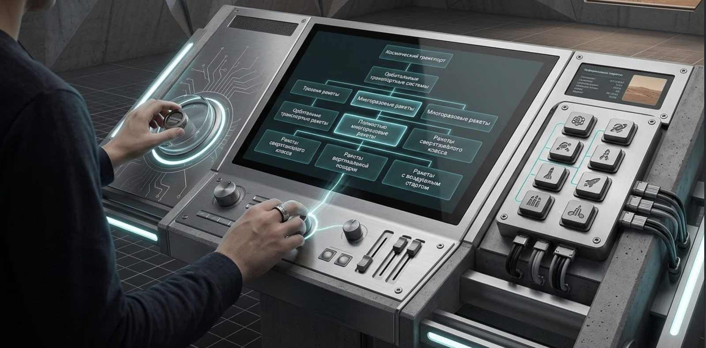
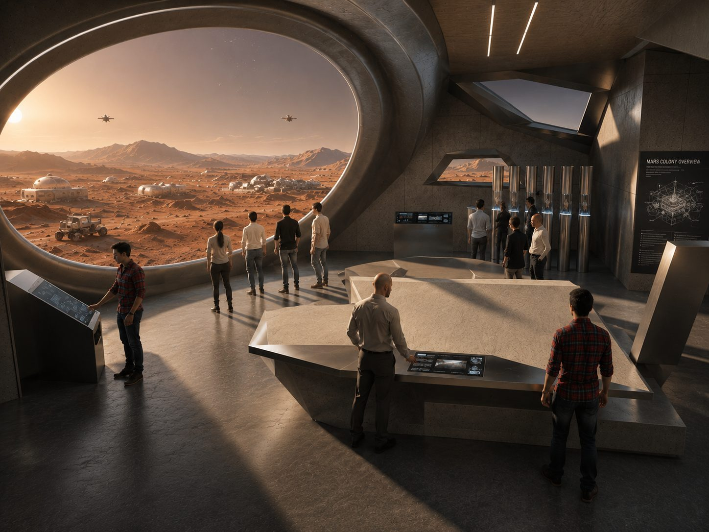
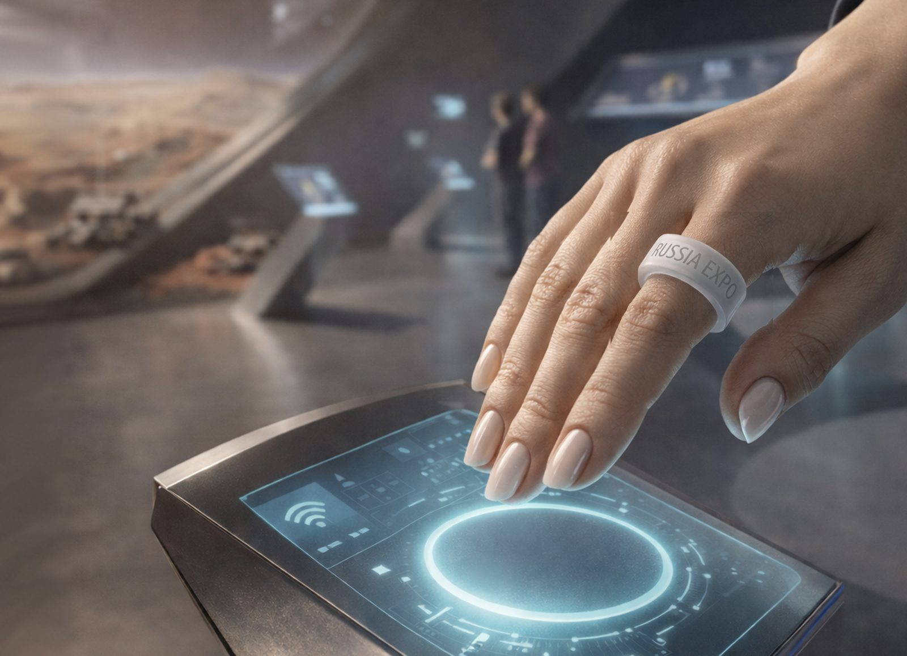

Future
Museum as a Working Space Base
When an educational subject has to become a sequence of personal missions.
What it solves
- Fuses knowledge, play and the sense of presence.
- Lets a visitor step into the role of an explorer.
- Turns separate exhibits into one coherent route.
How it works
Visitors enter a Mars base, look out at the surface of the planet through a hemispherical screen and complete tasks at interactive stations.
We're not studying Mars. We live and work here.
Mechanics
- Hemispherical screen
- Stations with physical buttons and mechanics
- Mission system
- Solo and group tasks
- Physical set design
Why this way
A role and a goal turn a pile of facts into a story. Information arrives at the moment it's needed to solve something: choose a landing site, ration supplies, ride out a storm, analyze a sample. Knowledge becomes a tool for action.
Where it applies
Space museums • science centers • education • theme parks • visitor centres
What it can show
A lunar base, a polar station, an underwater laboratory, an archaeological expedition and other worlds built for learning.


